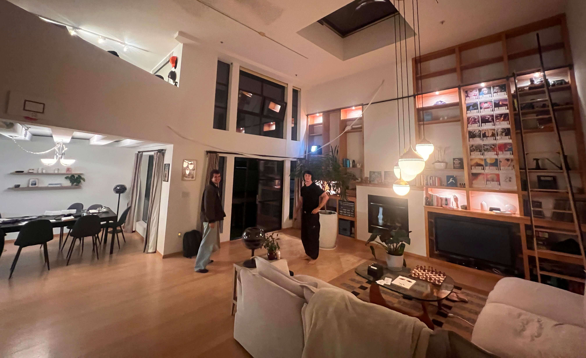

Quote Receipts¶
 Teddy Warner| Fall, 2025 | 19–24 minutes
Teddy Warner| Fall, 2025 | 19–24 minutes
I have some really wonderful friends. They, like I, say many silly things.
I wanted some means of capturing all of these quotes for later reference. Or to keep as nice souvenirs of thought.
My roommate and I have been going all in on the apartment projects (AIPhone, Cathode Ray Doorbell, StairGuitar™, etc. - I’ll do write-ups on some of these at some point in the future), and I figured to stay in the same vein that my weekend project should attempt to solve my quote attribution problem. I also happened to have an 80mm Thermal Receipt Printer lying around from another project I never got around to finishing.
And boom, I now knew how I would be spending my Saturday morning.
“That’s a Quote.”¶
The general premise of this build is pretty easy: people in my apartment say silly / interesting / funny things all the time. Upon hearing one of these silly / interesting / funny things, a user should be able to print said thing with little imposition. As such, we’ll need a locally hosted website, of course - A user will hear a quote, open said local website, and then a “quote receipt” will be generated and printed to memoralize that silly / interesting / funny moment for all of eternity.
This user flow demands a few things: first, a locally hosted webpage where a user can upload a quote. It’s probably important that this remains local to our apartment network, as I think it provides a nice scope for what quotes are fit to be printed (and so the gimmick doesn’t burn out too quickly). Also, this makes development easier. Second, a printer capable of quickly printing these “quote receipts”. I’ll be fitting this printer with a Raspberrry Pi 5 to handle the webserver hosting / printing.
Receipt [dot] Local¶
To start, lets take on this local webserver! For the sake of simplicity, I’ll be sticking to some skeuomorphism and designing a webform to look like a receipt. I started by flashing a fresh copy of Raspberry Pi OS Lite (64-bit) onto an SD card and updating the WiFi credentials.
Then I SSH’ed into the fresh RPI OS instance and got to work.
# SSH into your Pi
ssh pi@raspberrypi.local # Default password is usually 'raspberry'
# Update system
sudo apt update && sudo apt upgrade -y
A few config bits first:
# Set timezone
sudo raspi-config
# Navigate to: Localization Options > Timezone > Select yours
# Change default password (recommended)
passwd
Set Hostname to ‘receipt’ or whatever tickles your fancy, but this allows users to go to ‘receipt.local’ to upload their quote.
# Set hostname
sudo hostnamectl set-hostname receipt
# Update hosts file
sudo nano /etc/hosts
# Change the line: 127.0.1.1 raspberrypi
# To: 127.0.1.1 receipt
# Save: Ctrl+O, Enter, Ctrl+X
# Reboot to apply
sudo reboot
After reboot, reconnect with:
Then install Dependencies
# Install system packages
sudo apt install -y python3-pip python3-dev python3-pil libusb-1.0-0-dev avahi-daemon
# Install Python libraries (both user and system-wide for sudo)
pip3 install flask python-escpos pyusb pillow --break-system-packages
sudo pip3 install flask python-escpos pyusb pillow --break-system-packages
# Enable and start mDNS service
sudo systemctl enable avahi-daemon
sudo systemctl start avahi-daemon
# Reboot to ensure everything loads properly
sudo reboot
Plug in USB thermal printer, run lsusb to get vendor/product ID.
Output example:
Note: 0483:5720 → Vendor=0x0483, Product=0x5720
Output example:
Note your values: Vendor ID: 0x0483, Product ID: 0x5720, OUT Endpoint: 0x03, IN Endpoint: 0x81
Then we’ll create a very minimal project structure - I’m keeping this build to two files: a frontend HTML template and a simple Python backend. Clone the project repository:
git clone https://github.com/Twarner491/quotes.git ~/quotes
cd ~/quotes
sudo pip3 install -r requirements.txt --break-system-packages
Update src/app.py with your printer’s vendor/product/endpoint IDs:
VENDOR_ID = 0x0483 # Your vendor ID
PRODUCT_ID = 0x5720 # Your product ID
OUT_EP = 0x03 # Your OUT endpoint
IN_EP = 0x81 # Your IN endpoint
The frontend template lives in src/templates/index.html.
I’m super happy with how the squedomorphic design came out here - Thermal Printers are somewhat limited in their output (due to binary color option) and as such I was pretty constrined when designing how I wanted the output reciept to look. Once i had a boilerplate from the backend, making this frontend match was easy.

To get our RPI app up and running with the printer, we need to set some permissions. The udev rules are included in the repo:
sudo cp ~/quotes/system-config/99-thermal-printer.rules /etc/udev/rules.d/
sudo udevadm control --reload-rules
sudo udevadm trigger
# Add user to printer groups
sudo usermod -a -G lp,dialout $USER
# Reboot for permissions to take effect
sudo reboot
… and then we can test! Just be sure the printer is plugged into power, 80mm Thermal paper is loaded (I used MPRT 5 Rolls 3-1/8” x 230), and the printer is wired to the RPI via USB.
You should see:
Test from browser: http://receipt.local:5000
Press Ctrl+C to stop when done testing.
As a final step to prep for step 2: Printer Hacking, we’ll set up this app to auto run upon boot. The systemd service file is included in the repo at system-config/receipt-printer-flask.service:
sudo cp ~/quotes/system-config/receipt-printer-flask.service /etc/systemd/system/receipt-printer.service
sudo systemctl daemon-reload
sudo systemctl enable --now receipt-printer.service
# Check status
sudo systemctl status receipt-printer.service
# Test reboot
sudo reboot
After reboot, http://receipt.local:5000 should be live automatically!
As mentioned at the start of the article, my roommate and I have been going all in on the apartment projects. My roommate Andrew set up a Home Assistant Yellow the other week which we use alongside a few local MQTT servers to host all of our IOT devices and projects locally - way better than a ton of apps / interfaces on my phone. I wanted our quote printer to be accessible from anywhere and populate in our Home Assistant admin panel, so I’ve appended an optional MQTT integration to the project.
Home Assistant Integration (Optional)
The setup is straightforward: a webhook automation in Home Assistant receives print requests from the frontend, publishes them to an MQTT topic, and an MQTT subscriber script on the Pi listens for messages and triggers the printer. This allows the frontend to be hosted publicly (I’m using GitHub Pages) while the printer itself remains on the local network, bridged through Home Assistant.
The relevant files are src/mqtt_print_subscriber.py for the Pi-side MQTT listener and system-config/receipt-printer-mqtt.service for the systemd service.
Home Assistant Automation
Add to automations.yaml:
alias: "Quote Receipt Print"
trigger:
- platform: webhook
webhook_id: quote_receipt_print
allowed_methods: [POST]
local_only: false
action:
- service: mqtt.publish
data:
topic: "home/receipt_printer/print"
payload_template: >
{"quote": "{{ trigger.json.quote }}", "author": "{{ trigger.json.author | default('Anonymous') }}"}
Enable CORS
Add to configuration.yaml:
Pi MQTT Setup
Edit src/mqtt_print_subscriber.py with your MQTT broker IP and printer IDs, then:
sudo cp system-config/receipt-printer-mqtt.service /etc/systemd/system/receipt-printer.service
sudo systemctl daemon-reload
sudo systemctl enable --now receipt-printer.service
Frontend
Edit src/templates/index.html and set HA_WEBHOOK_URL, then host via GitHub Pages or use build_static.py.
Printer Hacking¶
What fun is a whimsical apartment project if it doesn’t look inconspicuous! To start, I removed the bottom of my miemieyo Thermal Receipt Printer to get a better sense of the space we have to work with by removing the two screws under the printer, as well as the two within the paper tray.
Unsurprisingly the internals of this receipt printer hardly fill the printer cavity, so retrofitting with our updated internals should be no problem at all. While the base piece that came on the machine has a suprisingly perfect cut out to fit a Raspberry Pi (almost like they were asking for this quote printer to be built), I opted to redesign the base of the printer entirly to allow for proper mounting of the stock printer mainboard, as well as the Raspberry Pi 5 and the LM2596 Buck Converter I’m using to power it.
I printed this new base on my Prusa I3 MK3S+, cleaned it up, and then prepared the thermal printer for installation. This primarly involved unmounting and detaching all plugs from the mainboard to prepare to mount it to the new base. Additionally, I used some wire snippers to remove the old mainboard mounts (as pictured below)
Then I started mounting components to the 3D printed baseplate, first the raspberry pi, then the buck converter.

Before continuing with the mainboard mounting, I wired the - IN terminal of the buck converter to the 24V in connector on the printer mainboard and the + IN to the printer power switch(note polarity below), and then used the potentiometer on the buck converter to set the output voltage to 5V.

I wired the +/- 5V output lines from the buck converter to the Raspberry Pi’s GPIO, connected the printer mainboard to the Raspberry Pi via USB, and plugged in the printer mainboard’s power (don’t actually attach this to the wall yet, get everything mounted and closed up first) and then mounted the mainboard to the 3D printed baseplate (you’ll need to plug in all the wires before mounting, its a tight fit).
I then reattached the printer mainboard wires,
… and attached the new base plate to the printer (wiggling all the wires into place to ensure nothing gets caught/clamped), reattached the screws in the paper tray, and finally, the screws under the printer. Amazing - the quote receipt printer is good to go!
BOM¶
Building a quote receipt printer of your own is easy enough. The full project repo is at github.com/Twarner491/quotes. Here’s all you need:
| Qty | Description | Price | Link | Notes |
|---|---|---|---|---|
| 1 | miemieyo Thermal Receipt Printer 80mm | $65.99 | Amazon | |
| 1 | MPRT 5 Rolls Thermal Paper 3-1/8” x 230’ | $15.99 | Amazon | |
| 1 | LM2596 Buck Converter | $7.99 | Amazon | |
| 1 | Raspberry Pi 5 | $79.95 | Raspberry Pi | Any Pi model should work - I happened to have a RPI5 8GB lying around |
| Some spare wire | ||||
| ∞ | Friends that say silly things | Free | Find My Friends |
Quotebook¶
This thing is so awesome. I’ve had some great fun printing out quotes this weekend and attached a few favorites below. I’ll update this every once in a while as I log more silly things.


Also, thermal printers are really wonderful pieces of technology. I was astonished by how quickly these things print, very low latency from silly quote being said to quote receipt in hand. To stress test, I decided to print the entire Bee Movie script.
I hung the results like tinsel in my living room.

p.s. This “i before e except after c” shenanigans really throws me off. Apologies in advance for any “reciepts” left in this piece lol.
Memories printed. Dignity sold.